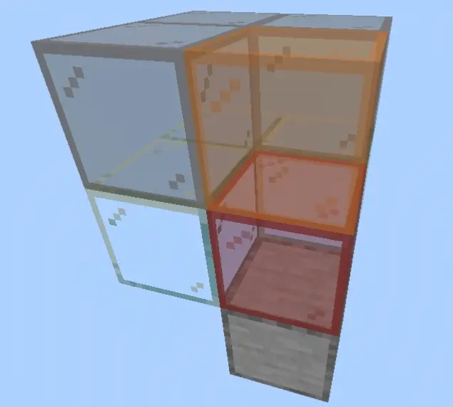
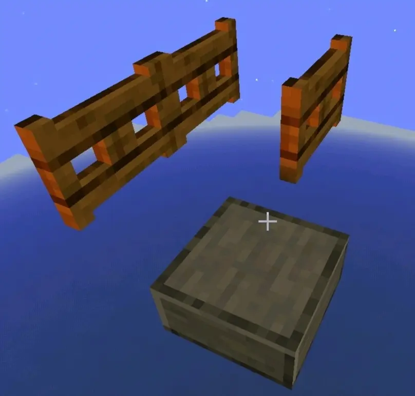
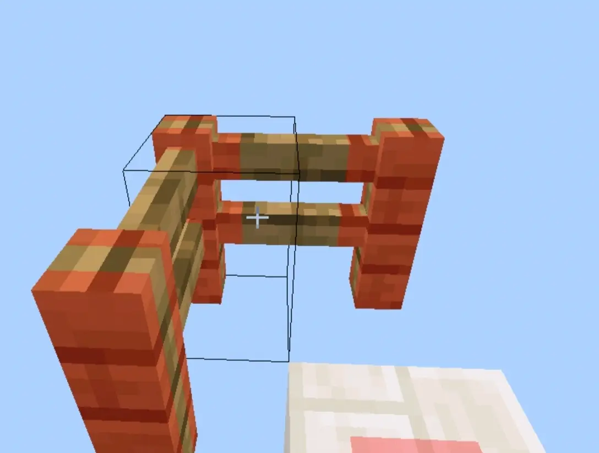
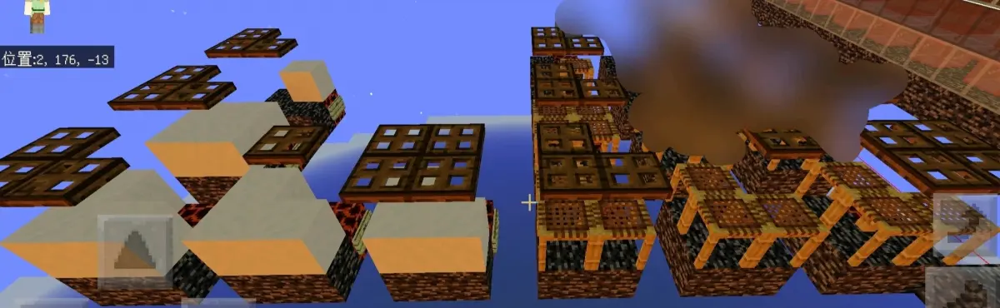
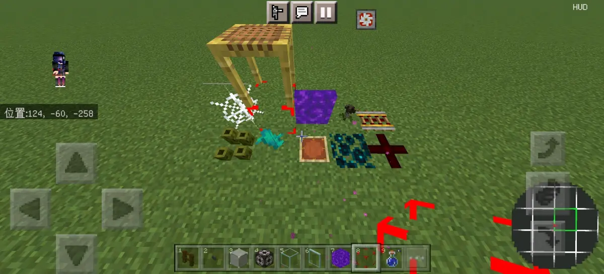

鉴于到现在为止还有人迷信挤压苦力怕塔，我觉得有必要出一个专栏详细介绍空间检测机制
部分内容来源:
jx67,ce36的生成评估模型:
orange_31的有关碰撞箱检测的机制:
rufus测试,orange_31搬运的不阻碍生成表:
OEOTYAN翻的实体碰撞箱数据
前言:
1.注意本专栏介绍的空间检测机制只适用于主世界常规怪物，这只包含了:僵尸,僵尸村民,骷髅,苦力怕,蜘蛛,末影人,女巫。其他生物的空间检测机制与此大致相似但不确保相同
2.需要知道的是，空间检测是指生物在生成尝试时会对其生成点周围特定空间内的情况进行评估，满足合适的条件后才能生成。与之同阶段的检测还有密度检测，但诸如此类的并不在空间检测之内，所以不做解释。
3.本专栏中的譬如"主要生成检测区"等红色字体的概念来源于jx，并与他的视频统一，建议不了解这些概念的先去看ce36转的视频，链接见前文
4.本专栏中的理论大部分依靠大量的测试和跟其他大佬的交流，没有源代码支持，所以并不一定准确，但是确保正确，用来描述评估模型也足够了
5.僵尸,小僵尸,僵尸村民,僵尸父子和蜘蛛,蜘蛛骑士都属于原物种(第一个)的变种，在检测时按原物种的机制检测
检测时会按序号顺序检测以下内容(序号相同则可以不分先后，序号表示是第几轮检测)
1.生成点判定
判断是否属于一个合法生成点
①生成点是可生成方块
②从该生成点处向上遍历寻找到空气类方块，但是这个遍历过程会被一些方块打断导致判定失败，不影响这个遍历过程的方块目前被称为伪空气方块(包括完全不阻碍生成方块,末地烛和1.18.30后的篝火)
1.光照检测
检测生成点上方一格位置的光照亮度(包括天空光照和方块光照)
对于1.17.30以前的版本要满足两者皆小于等于7
对于1.17.30及以后的版本要满足方块光照为0，天空光照依旧小于等于7
1.种群检测
可以理解为特殊类群生物的附加特判
对于这篇专栏介绍的生物就是主要生成检测区不能有液体方块(如:水)
1.空间检测

上北下南左西右东，一个2*2*2的检测模型
检测模型内(模型的大小由生物种类决定，蜘蛛是2*1*2，末影人是2*3*2，其他是2*2*2，以生成点西北角为水平中心。可以说水平上模型是以怪物生成位置为中心的)是否有阻碍生成现象，不满足以下的属于阻碍生成现象:
①主要生成检测区域必须是完全不阻碍生成方块
②次要生成检测区域必须是部分不阻碍生成方块(包含完全不阻碍生成方块)
若没有阻碍生成现象则此检测满足
当且仅当有阻碍生成现象时进行下边的碰撞箱检测和头部检测
(2.碰撞箱检测)
每次生成事件都会抽中一个即将生成的怪物种类，当进行碰撞箱检测时，会检测与该种怪物的碰撞箱重合的方块的碰撞箱，若有重合部分则检测不满足
需要注意的是:
①由于生物生成在生成点的西北角，所以检测碰撞箱的范围也是以生成方块西北角为水平中心的，并不是以生成方块为水平中心的

可以刷怪
②此处所指的碰撞箱并不是该方块的实际大小，而是跟轮廓有关但又不完全有关，如以下两例

啥也不刷，因为轮廓大小重合了

左边雪片的5个只刷蜘蛛，右边脚手架的刷蜘蛛和苦力怕，这说明有时与轮廓无关，而与实际碰撞大小有关
大部分方块属于第一种直接看轮廓的
小部分在此检测中被视为无轮廓，此类方块有以下几种

图片来自离殇
(2.头部检测)
检测生成点上方第二格，也就是前文图片中橙色玻璃的位置，若进行头部检测时该处方块是可窒息方块，则检测不满足
生成成功需要
1.生成点判定,亮度检测,种群检测 都满足
2.空间检测满足 或 空间检测不满足但碰撞箱检测和头部检测都满足
附录:一份比较新的方块数据表
空气类方块:(与空气具有相同的性质)
空气
水
岩浆
篝火(1.18.30以后改为伪空气方块)
完全不阻碍生成方块(不写空气类方块):
火，火把
蜘蛛网，线
雪片
脚手架
告示牌
各种花草树苗
竹子，竹笋
末地烛
潮涌核心
头颅
花盆
物品展示框
三种非法门
海泡菜，蜡烛
垂滴莲
杜鹃花
孢子花
苔藓块(仅适用于1.16.220.52等测试版)
(篝火和杜鹃花在1.18.30后改为部分不阻碍生成方块)
部分不阻碍生成方块(不写完全不阻碍生成方块):
红石粉
拉杆
绊线钩
压力板
比较器，中继器
铁轨
甜梅
梯子
地毯
仙人掌
树叶
玻璃，玻璃板，遮光玻璃
萤石，海晶灯
冰，霜冰
TNT
钟乳石
粉雪
苔藓地毯
泥土根
末地门框架
主世界常规怪物的碰撞箱数据:
僵尸,骷髅,女巫：宽0.6高1.9
苦力怕：宽0.6高1.8
末影人：宽0.6高2.9
蜘蛛：宽1.4高0.9